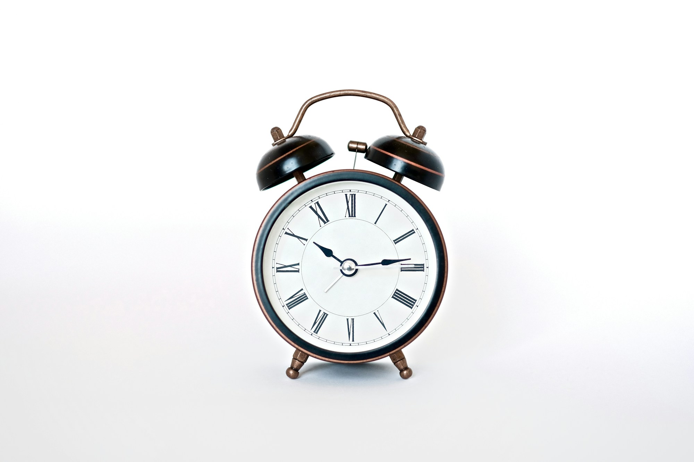

Inicio/Artículos/Herramientas · Nutrición
Calculadora de calorías: TMB y gasto calórico diario
6 min de lectura · Actualizado 4 de septiembre de 2026

Esta herramienta calcula dos números que suelen aparecer mezclados en redes sociales bajo términos como "mis calorías de mantenimiento" o "cuánto debo comer": la tasa metabólica basal (TMB) y el gasto calórico diario total (TDEE, por sus siglas en inglés). Ambos son estimaciones, no mediciones exactas, pero sirven como punto de partida razonable antes de ajustar cualquier plan de alimentación.
Qué calcula esta herramienta
La TMB es la energía que tu cuerpo consume en reposo absoluto para mantener funciones básicas como respirar, la circulación y la actividad celular. El TDEE toma esa TMB y la multiplica por un factor según tu nivel de actividad física, para estimar cuántas calorías gastás en un día completo, incluyendo el ejercicio y el movimiento cotidiano.
Calculá tu TMB y tu gasto calórico diario
De dónde sale el cálculo
El resultado se basa en la ecuación de Mifflin-St Jeor, publicada en 1990 y validada en estudios posteriores como una de las fórmulas más precisas disponibles para estimar la TMB en población general, por eso reemplazó en gran medida a la antigua fórmula de Harris-Benedict. No es un cálculo inventado ni una aproximación de marketing: es la que suelen usar nutricionistas y calculadoras clínicas como punto de partida.
La fórmula usada es la siguiente. Para hombres: TMB = 10 × peso (kg) + 6.25 × altura (cm) − 5 × edad + 5. Para mujeres: TMB = 10 × peso (kg) + 6.25 × altura (cm) − 5 × edad − 161. Ese valor se multiplica luego por un factor de actividad (entre 1.2 y 1.9) para obtener el TDEE.
Limitaciones a tener en cuenta
Como cualquier fórmula basada en peso, altura, edad y sexo, esta calculadora no distingue composición corporal: dos personas con el mismo peso pero distinta proporción de masa muscular y grasa pueden tener una TMB real algo diferente a la estimada. Tampoco considera condiciones médicas que alteran el metabolismo (problemas de tiroides, ciertos medicamentos, embarazo), ni factores genéticos individuales. El resultado es un punto de partida razonable, no una cifra clínica exacta, y cualquier objetivo de pérdida o ganancia de peso conviene ajustarlo con seguimiento real y, frente a condiciones de salud, con acompañamiento profesional.
- ¿La TMB es lo mismo que las calorías que debo comer?
- No. La TMB es lo que tu cuerpo gasta en reposo total. El TDEE, que ya incluye tu actividad diaria, es la referencia más útil para pensar en mantenimiento, déficit o superávit calórico.
- ¿Por qué la fórmula da resultados distintos entre hombres y mujeres con los mismos datos?
- Porque, en promedio, los hombres tienen mayor proporción de masa muscular respecto a la grasa corporal a igual peso, lo que eleva el gasto energético en reposo. La fórmula lo refleja con una constante distinta para cada sexo.
- ¿Puedo usar este número para bajar de peso rápido?
- El TDEE sirve como referencia de mantenimiento. Un déficit moderado y sostenido suele ser más seguro y sostenible que un déficit agresivo, y ante cualquier duda sobre cuánto reducir conviene consultar a un profesional de nutrición.